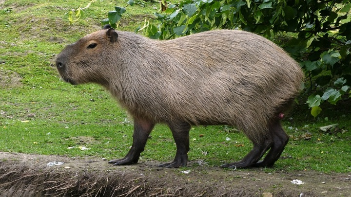

Капибарра - полуводное травоядное млекопитающее из подсемейства водосвинковых, один из двух ныне существующих видов рода водосвинки. Капибарра - самый крупный среди срвременных грызунов.
Капибарра встречается по берегам разнообразных водоемов в тропических и умеренных частях Центральной и Южной Америки, восточнее Анд - от Панама до Урувгая и северо-востока Аргентины.
Ведёт полуводный ображ жизни; от воды редко удаляется более чем на 500 - 1000 м. Её распространение связанно с сезонными колебаниями уровня воды - во время сезона дождей капибарра рассеиваются по территории, в сухой сезон скапливаются по берегам крупных рек и других постоянных водоемов и зачастую проходят в поисках воды и пищи значительные растояния.
Эти грызуны обычно активны днем, но если их часто беспокоят люди и хищники, то переходят на ночной образ жизни.